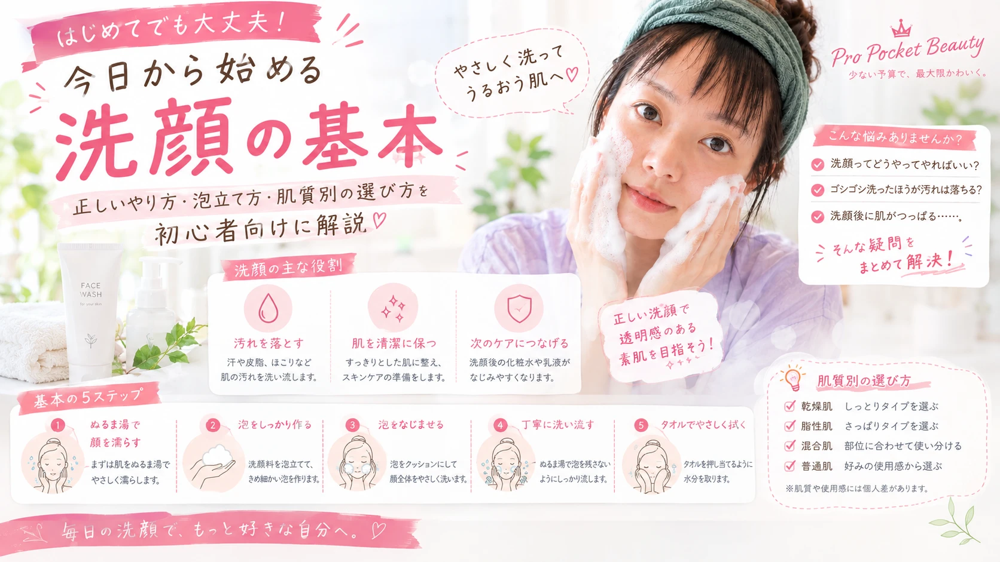

洗顔の基本｜正しいやり方・泡立て方・肌質別の選び方を初心者向けに解説
「洗顔ってどうやってやればいい？」
「ゴシゴシ洗ったほうが汚れは落ちる？」
「洗顔後に肌がつっぱる……」
そんなスキンケア初心者さんに向けて、
洗顔の基本から正しい洗い方、
泡立て方、洗顔料の選び方まで
わかりやすく紹介します。

洗顔はスキンケアの基本
洗顔は、肌についた汗や皮脂、 ほこりなどの汚れを落とし、 その後のスキンケアを行いやすくするための基本ケアです。
ただし、汚れを落とそうとして 強くこすったり、熱すぎるお湯を使ったりすると、 肌への負担になることがあります。
洗顔は「しっかり落とす」だけではなく、 肌をこすりすぎず、やさしく洗うことを意識しましょう。
洗顔の主な役割
① 汚れを落とす
汗や皮脂、ほこりなど、 肌表面についた汚れを洗い流します。
② 肌を清潔に保つ
肌をすっきり整え、 毎日のスキンケアを始める準備をします。
③ 次のケアにつなげる
洗顔後は化粧水や乳液などで 肌のうるおいを整えていきます。
正しい洗顔方法｜基本の5ステップ
ぬるま湯で顔を軽く濡らす
まずは肌をぬるま湯で濡らします。
洗顔料をしっかり泡立てる
きめ細かい泡を作り、 泡をクッションのように使います。
泡を顔全体になじませる
皮脂が気になる部分から やさしく泡を広げます。
こすらず洗い流す
肌をゴシゴシこすらず、 泡が残らないように丁寧に流します。
タオルでやさしく水分を取る
タオルを肌に押し当てるようにして、 水分をやさしく拭き取ります。
洗顔料の泡立て方
洗顔では、泡をしっかり作ることがポイントです。
STEP 1｜手を清潔にする
まず手を洗ってから洗顔を始めましょう。
STEP 2｜洗顔料と水をなじませる
商品に記載された適量を手に取り、 少量ずつ水を加えながら泡立てます。
STEP 3｜きめ細かい泡を作る
ふわっとした泡ができたら、 その泡を肌にのせて洗います。
「手で肌をこする」のではなく、 「泡を転がすように洗う」イメージがおすすめです。
朝と夜の洗顔はどう違う？
| タイミング | 意識したいこと |
|---|---|
| 朝 | 寝ている間の汗や皮脂などを落として、肌を整える |
| 夜 | 一日の汚れを落として、清潔な状態に整える |
※肌質や使用する製品によって適した洗顔方法は異なります。 肌の状態を見ながら調整しましょう。
肌質別・洗顔料の選び方
| 肌質 | 選ぶときのポイント |
|---|---|
| 乾燥が気になる肌 | 洗い上がりがつっぱりにくいタイプを選ぶ |
| 脂性肌 | 皮脂が気になる部分をすっきり洗えるものを選ぶ |
| 混合肌 | 部位ごとの皮脂量を考えて使用感を選ぶ |
| 普通肌 | 季節や好みの使用感から選ぶ |
洗顔でやりがちなNG習慣
ゴシゴシこする
汚れを落とそうとして強くこするのは避けましょう。 泡をクッションにして、やさしく洗います。
熱すぎるお湯で洗う
熱すぎるお湯ではなく、 肌に負担をかけにくい温度を意識しましょう。
洗顔料を泡立てない
泡立てられるタイプの洗顔料は、 十分に泡立ててから使いましょう。
洗顔後に何もしない
洗顔後は肌が乾燥しやすく感じることがあるため、 化粧水や乳液などで保湿ケアを行いましょう。
きれいに洗うための5つのポイント
- 洗顔前に手を清潔にする
- 洗顔料はしっかり泡立てる
- 肌を強くこすらない
- すすぎ残しがないように流す
- 洗顔後は早めに保湿する
洗顔のよくある疑問
Q. 洗顔は朝と夜の両方する？
A. 朝と夜で肌の状態や汚れの種類が異なるため、 それぞれのタイミングに合わせてケアします。 自分の肌状態に合わせて調整しましょう。
Q. 泡立てネットは必要？
A. 必須ではありませんが、 泡立てネットを使うと比較的簡単に泡を作れます。
Q. 洗顔後に肌がつっぱるのはなぜ？
A. 洗顔料や洗い方、肌の状態などによって つっぱりを感じることがあります。 洗顔方法や使用するアイテムを見直してみましょう。
Q. 洗顔後は何をすればいい？
A. 基本的には化粧水や乳液などで 肌のうるおいを整えていきます。
洗顔の基本まとめ
- 洗顔は肌の汚れを落とす基本ケア
- 洗顔料はしっかり泡立てる
- 肌をゴシゴシこすらない
- すすぎ残しがないように丁寧に流す
- 洗顔後は保湿ケアにつなげる
洗顔は毎日行うものだからこそ、 「強く洗う」よりも「やさしく洗う」ことを意識するのがポイントです。
自分の肌状態に合った洗顔料と洗い方を見つけて、 無理なく続けられるスキンケアを始めてみましょう。

美容・メイク・ファッションを中心に、 初心者にもわかりやすい情報を紹介しています。